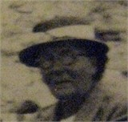
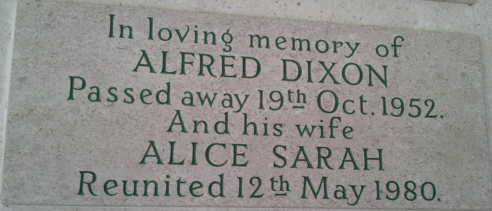
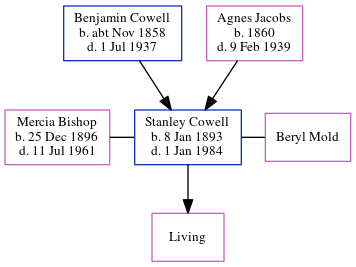

Alice Sarah Dixon (née Cowell) 1883 - 1980
[ Home ] | [ Calendar ] | [ Surnames Index ] | [ Errors ] | [ Family History ]The eldest of 3 children of George Cowell (an army ordnance depot foreman) and Ellen Bockham, Alice Cowell, the third cousin twice-removed on the mother's side of Nigel Horne, was born in Chatham, Kent, England on 1 Dec 18831,2,3, was baptised there on 30 Dec 1883 and married Alfred Dixon (an iron moulder with whom she had 3 children: George Alfred, Frank Ernest and Winifred Alice) in Medway, Kent, England around Nov 19084.
During her life, she was living at Maidstone Road, Rochester, Kent on 5 Apr 18917; in Rochester, Kent, England on 31 Mar 19016; and at 112 Cecil Road in Rochester on 2 Apr 19115 and on 29 Sept 19391.
She died on 12 May 1980 in Whitstable, Kent, England3.
Parents
- George Henry was born on 25 Aug 1860
- Ellen was born on 27 Sept 1860
Children
- George Alfred was born on 23 Apr 1910
- Frank Ernest was born on 3 Aug 1914
- Winifred Alice was born on 31 May 1917
Citations
- 1939 Register - Findmypast (was the wife of the head of the household)
- England & Wales births 1837-2006 - Findmypast
- England & Wales deaths 1837-2007 - Findmypast
- England & Wales marriages 1837-2008 - Findmypast
- 1911 Census for England & Wales - Findmypast (was age 27 and the wife of the head of the household)
- 1901 England, Wales & Scotland Census - Findmypast (was age 17 and the daughter of the head of the household)
- 1891 England, Wales & Scotland Census - Findmypast (was age 7 and the daughter of the head of the household)
Media
Alice Cowell

1891 UK Census

1911 UK Census - page 2

1911 UK Census - page 1

Alice Cowell - Alfred Dixon - headstone

England & Wales births 1837-2006 - BMD/B/1883/4/AZ/000123/029
England Births & Baptisms 1538-1975 - R_935122635
England Births & Baptisms 1538-1975 - R_873097661
England & Wales deaths 1837-2007 - BMD/D/1980/2/AZ/000278/099
1939 Register Transcription - TNA-R39-1772-1772J-023-41
England & Wales marriages 1837-2008 - BMD/M/1908/4/AZ/000083/221
1911 Census for England & Wales - GBC/1911/RG14/03896/0023/2
1901 England, Wales & Scotland Census - GBC/1901/0005415329
1891 England, Wales & Scotland Census - GBC/1891/0005385104
1939 Register Transcription - TNA-R39-1772-1772J-023-40
Family Tree
Map
Generated by ged2site. Last updated on Jul 3, 2024